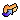

History of Changes

Introduction and explanation of symbols
Changes are sorted
by "type" and then chronologically with the most recent at the top.
These symbols denote the various action types:
=add,  =update
=update
Version 0.1 (unreleased)
Changes to Project Administration
- Initial version of forrest core theme plugin. The contracts and structurer are coming from all former view/dispatcher plugins. Committed by TS.
Changes to the Code Base
-
Resolve img/@border, input/@onBlur, and input/@onFocus validation issues for pelt theme.
Committed by DC. Thanks to Brian Dube. See Issue FOR-895.
-
Resolve div/@id and script/@language validation errors in common theme.
Committed by DC. Thanks to Brian Dube. See Issue FOR-894.
Contributors to this release
We thank the following people for their contributions to this release.
This is a list of all people who participated as committers:
David Crossley (DC), Thorsten Scherler (TS).
This is a list of other contributors:
Brian Dube.
All Committers
This is a list of all people who have ever participated as committers on this project.
- Thorsten Scherler (TS)
- David Crossley (DC)
- Volunteer needed (open)